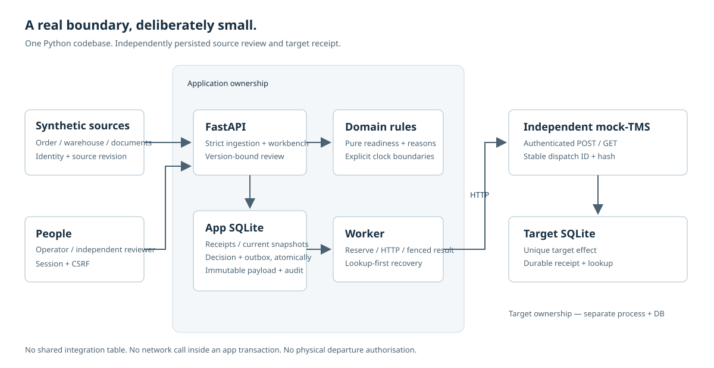

Independent software engineering case study
Evidence
before action.
Reliable logistics integration, from warehouse evidence to transport review.
A practical cross-dock lab built around one question: can we trust the evidence behind this request?
Synthetic data. Real Python application. Independently persisted mock target.

The operational question
Three expected.
Two observed.
One unresolved decision.
Orders, warehouse observations and document status belong to different systems. If they disagree, a confident-looking dashboard can conceal uncertainty.
QuayReady reconciles the latest evidence, explains the discrepancy and binds a human review to the exact evidence version. Only then can an integration request be queued.
This is an illustrative logistics problem, not a claim about any real company's internal processes. A dispatch-review request never authorises physical departure.
Follow one shipment
From discrepancy to reviewed request.
Interactive simulation — based on the verified QuayReady workflow. No Python backend or private server is called.
Interactive controls are unavailable while JavaScript is disabled or blocked. The complete workflow and architecture remain readable below.
Order created
A synthetic transport order expects three pallet identifiers.
- DEMO-P001 Expected
- DEMO-P002 Expected
- DEMO-P003 Expected
- Readiness
- Needs review
- Human review
- Not requested
- Delivery
- Not requested
- Order created with three expected pallets.
- Expected pallet identifiers registered.
- Warehouse snapshot contains two pallets.
- P003 is reported missing; review is unavailable.
- A higher source revision corrects the warehouse snapshot.
- Fresh warehouse and document evidence make review eligible.
- An operator creates a version-bound proposal.
- A different subject approves the same evidence version.
- Approval and outbox commit atomically.
- A worker sends the same immutable dispatch identifier over HTTP.
- The independent mock-TMS receipt confirms the persisted request.
Failure & recovery lab
A timeout is a question.
Not an answer.
Educational simulations. These timelines explain the protocol; they are not recordings of test executions. Inspect real verification evidence.
- Request sent with stable dispatch ID.
- Target commits one durable effect.
- Client loses the response; outcome is unknown.
- After restart, lookup finds the original receipt.
- App confirms historical delivery; target effect count remains one.
System boundaries
One codebase.
Two owners of truth.
The app owns evidence and review. The mock-TMS owns its effect and receipt. They communicate over real local HTTP, never through a shared integration table.

- App evidence
- Worker / HTTP
- Target receipt
Synthetic sources
Transport order, warehouse snapshots and document snapshots. Their source identity and revisions are explicit; their truth is simulated, not live warehouse data.
Read all components without interactive selection
- Sources
- Order API, complete warehouse snapshots and document snapshots; authenticated per source and site.
- FastAPI ingestion
- Validates strict JSON and identity, then commits receipts/projections or rejects safely.
- Domain validation
- Pure deterministic rules calculate readiness and reasons. Unknown evidence is not zero.
- Operator and reviewer
- Server-rendered workbench; stable subjects, session/CSRF and independent review of a fixed evidence version.
- SQLite evidence
- App database owns immutable receipts, current source pointers, proposals, decisions and audit.
- Outbox
- Immutable dispatch payload committed with approval. The database owns durable counters, leases and barriers.
- Worker and HTTP
- Reserve, commit, send, fenced result. Lookup-first recovery with bounded retries; no network in an app transaction.
- Independent mock-TMS
- Separate HTTP process and separate target database own unique effects and persistent receipts. Commit may outlive the client's response.
Engineering quality
Claims you can inspect.
Local execution evidence is distinct from this simulation and from hosted CI. Hosted GitHub Actions has not run on this unpublished branch.
Detailed commands, runtime versions and limitations are in the bundled evidence.
Business & technical decisions
Small enough to explain.
Serious enough to question.
Build the smallest complete chain, then test its failure boundaries. Infrastructure is justified by the problem, not by the portfolio.
Why deterministic rules instead of AI?
Pallet-set comparison, holds, freshness and cutoff boundaries need predictable, explainable answers. Generative output adds uncertainty without useful judgment here.
Why independent review?
Separation of duties makes the evidence version and accountable subject explicit. It does not make uncertain evidence safe or authorise physical departure.
Why SQLite and explicit SQL?
One local writer, inspectable transactions and real constraints suit this lab. A real deployment would need workload sizing, backup/restore design and operational ownership before choosing its database.
Why an outbox and separate databases?
Approval must not commit without a durable dispatch request. The target's receipt is its own fact; a network call cannot be made atomic with the app's SQLite commit.
Why target idempotency?
Response loss cannot tell a client whether a request committed. Stable IDs, content hashes and unique target effects make repeated delivery safe under the agreed contract.
Why no microservices platform?
One maintainable application package plus an independent simulated target demonstrates the actual boundary. Kubernetes, brokers and more services would obscure this exercise.
What changes in a real enterprise?
Supplier contracts, identity/SSO, source authority, observability, availability targets, backup exercises, support duties, privacy assessment and operational change management need real stakeholders and validation.
Watch the real application
Evidence on screen.
A genuine local browser walkthrough, with captions and a text transcript. It shows synthetic application state; the target is independently persisted.
Honest boundaries.
Credibility includes what has not been proven.
- Synthetic data and mock integrations; no real logistics deployment.
- No production compliance certification or professional penetration test.
- No physical departure authorisation or customs clearance.
- No measured operational ROI, customer claims or endorsements.
- Local verification does not prove production availability or personal mastery.
About the project
Business judgment,
made inspectable.
An independent portfolio and learning project by Philippe Godfroy. It connects business analysis with requirements, explicit data ownership, reliable automation and practical software delivery.
AI assisted implementation and learning materials. Tests and reproducible evidence support technical claims; they do not establish professional client experience or independent personal competence.
Explore the mastery exercisesFollow the evidence.
Read the architecture, inspect the tests, or reproduce the real three-pallet workflow locally.
Source repository is currently private. Publication requires a separate owner decision.